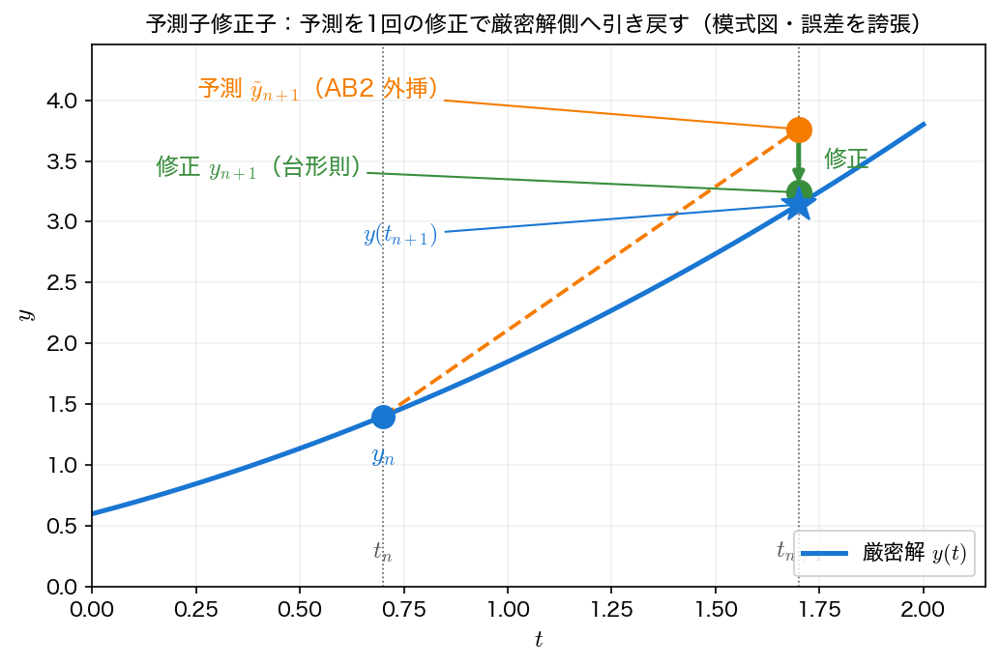

予測子・修正子法
陰的解法は安定性に優れるが、毎ステップ陰的方程式を反復で解く手間がかかった。だが反復の初期推定が良ければ少ない手数で済む。陽的な公式で \(y_{n+1}\) を予測（predict）し、その値を使って陰的な公式で1回だけ修正（correct）する——これが予測子修正子法（predictor–corrector method）である。陰的解法の安定性に近づきつつ、反復を省ける。
考え方：予測と修正
- 予測子（predictor）：陽的な公式（たとえばアダムス＝バッシュフォース AB2）で \(y_{n+1}\) の予測値 \(\tilde y_{n+1}\) を作る。
- 修正子（corrector）：陰的な公式（たとえば台形則やアダムス＝ムルトン）の右辺 \(f(t_{n+1}, y_{n+1})\) に、未知の \(y_{n+1}\) の代わりに予測値 \(\tilde y_{n+1}\) を1回だけ代入して修正値 \(y_{n+1}\) を得る。
陰的方程式を厳密に解く（反復を収束させる）代わりに、予測値を初期推定とした反復1回分で打ち切るわけである。予測値が十分よければ、これで修正子の精度・安定性をほぼ享受できる。

PECE
修正を1回行う標準的な手順は、4つの操作の頭文字をとって PECE と呼ばれる。AB2 を予測子、台形則（AM1）を修正子とすると：
| 記号 | 操作 | 式 |
|---|---|---|
| P（Predict） | 予測 | \(\tilde y_{n+1} = y_n + \dfrac{h}{2}(3 f_n - f_{n-1})\) |
| E（Evaluate） | 傾きを評価 | \(\tilde f_{n+1} = f(t_{n+1}, \tilde y_{n+1})\) |
| C（Correct） | 修正 | \(y_{n+1} = y_n + \dfrac{h}{2}(f_n + \tilde f_{n+1})\) |
| E（Evaluate） | 次に備え再評価 | \(f_{n+1} = f(t_{n+1}, y_{n+1})\) |
1ステップで \(f\) を2回評価する（予測点と修正点）。修正をもう一度繰り返す PE(CE)\(^2\) などもあるが、予測子修正子法では通常1回の修正にとどめる（収束まで反復するなら陰的解法そのものになる）。AB と AM を同次数で組み合わせれば（AB3 予測＋AM3 修正など）、高次の予測子修正子対が作れる。
ホイン法は最も簡単な予測子修正子
第4回のホイン法（改良オイラー法）
は、実は前進オイラーを予測子・台形則を修正子とする最も簡単な予測子修正子法である。実際、\(\tilde y_{n+1} = y_n + h f(t_n, y_n)\)（前進オイラーで予測）とおくと \(k_2 = f(t_{n+1}, \tilde y_{n+1})\) で、\(y_{n+1} = y_n + \tfrac h2(k_1 + k_2)\) はまさに予測値を代入した台形則（修正）に等しい。第4回ですでに予測子修正子の考え方に触れていたわけである。上記の PECE は、その予測子を1段の前進オイラーから2段の AB2 に置き換えて精度を上げたものと見られる。
サンプルコード
例題1を AB2 予測＋台形則修正の PECE で解く。前半は各ステップを厳密解から出発させ、予測のみと修正後の局所誤差を比べる（修正の効果を見る）。後半は \(h\) を半減させ、PECE が2次精度であることを誤差比で確認する。起動は RK4。
#include <stdio.h>
#include <math.h>
/* 例題1: y' = y - t^2 + 1, y(0)=0.5, 厳密解 y(t)=(t+1)^2-0.5 e^t */
double f(double t, double y) { return y - t*t + 1.0; }
double exact(double t) { return (t+1.0)*(t+1.0) - 0.5*exp(t); }
double rk4_step(double t, double y, double h)
{
double k1 = f(t, y);
double k2 = f(t + h/2.0, y + h/2.0*k1);
double k3 = f(t + h/2.0, y + h/2.0*k2);
double k4 = f(t + h, y + h*k3);
return y + h/6.0*(k1 + 2.0*k2 + 2.0*k3 + k4);
}
/* AB2 予測子 + 台形則(AM1)修正子の PECE 法。
P: ytil = y_n + (h/2)(3 f_n - f_{n-1})
E: ftil = f(t_{n+1}, ytil)
C: y_{n+1} = y_n + (h/2)(f_n + ftil)
E: f_{n+1} = f(t_{n+1}, y_{n+1})
起動 y_1 は RK4。 */
double pece_at2(double h)
{
int N = (int)(2.0/h + 0.5);
double y0 = 0.5, y1 = rk4_step(0.0, y0, h);
double fnm1 = f(0.0, y0), fn = f(h, y1), y = y1;
for (int n = 1; n < N; n++) {
double t1 = (n + 1)*h;
double ytil = y + h/2.0*(3.0*fn - fnm1); /* 予測 (AB2) */
double ftil = f(t1, ytil); /* 評価 */
double ynew = y + h/2.0*(fn + ftil); /* 修正 (台形則) */
fnm1 = fn;
fn = f(t1, ynew); /* 再評価 */
y = ynew;
}
return y;
}
int main(void)
{
double h = 0.2;
/* 各ステップを厳密解から出発させ、1ステップ分の局所誤差を比べる。
予測子(AB2)だけより、修正(台形則)を1回かけた方が局所誤差が小さい。 */
printf("=== 1ステップの局所挙動 (各ステップを厳密解から出発, h=0.2) ===\n");
printf(" t 予測 ytil(AB2) |予測の局所誤差| 修正 y(台形) |修正の局所誤差|\n");
printf("--------------------------------------------------------------------------------\n");
for (int n = 1; n <= 9; n++) {
double tm1 = (n - 1)*h, t0 = n*h, t1 = (n + 1)*h;
double ynm1 = exact(tm1), yn = exact(t0);
double fnm1 = f(tm1, ynm1), fn = f(t0, yn);
double ytil = yn + h/2.0*(3.0*fn - fnm1); /* 予測 (AB2) */
double ftil = f(t1, ytil); /* 評価 */
double yc = yn + h/2.0*(fn + ftil); /* 修正 (台形則) */
printf("%4.1f %12.8f %10.3e %12.8f %10.3e\n",
t1, ytil, fabs(ytil-exact(t1)), yc, fabs(yc-exact(t1)));
}
printf("\n=== 収束次数 (2次精度の確認) ===\n");
double ye = exact(2.0);
double hs[] = {0.2, 0.1, 0.05, 0.025};
double prev = 0;
printf(" h 数値解 y(2) 誤差 誤差比\n");
printf("--------------------------------------------------\n");
for (int i = 0; i < 4; i++) {
double yy = pece_at2(hs[i]);
double e = fabs(yy - ye);
printf("%9.4f %12.8f %.4e", hs[i], yy, e);
if (i) printf(" %.2f\n", prev/e); else printf(" --\n");
prev = e;
}
printf("\n(2次精度なら誤差比は約 4)\n");
return 0;
}
コンパイルと実行：
実行結果
=== 1ステップの局所挙動 (各ステップを厳密解から出発, h=0.2) ===
t 予測 ytil(AB2) |予測の局所誤差| 修正 y(台形) |修正の局所誤差|
--------------------------------------------------------------------------------
0.4 1.21608821 2.001e-03 1.21383730 2.503e-04
0.6 1.65138408 2.443e-03 1.64863482 3.058e-04
0.8 2.13021401 2.984e-03 2.12685606 3.735e-04
1.0 2.64450434 3.645e-03 2.64040292 4.562e-04
1.2 3.18439386 4.452e-03 3.17938438 5.572e-04
1.4 3.73783809 5.438e-03 3.73171950 6.805e-04
1.6 4.29012587 6.642e-03 4.28265261 8.312e-04
1.8 4.82328892 8.113e-03 4.81416106 1.015e-03
2.0 5.31538077 9.909e-03 5.30423197 1.240e-03
=== 収束次数 (2次精度の確認) ===
h 数値解 y(2) 誤差 誤差比
--------------------------------------------------
0.2000 5.29419780 1.1274e-02 --
0.1000 5.30120541 4.2665e-03 2.64
0.0500 5.30418465 1.2873e-03 3.31
0.0250 5.30511967 3.5228e-04 3.65
(2次精度なら誤差比は約 4)
前半の局所挙動を見ると、各ステップで修正後の局所誤差が予測のみの約 \(1/8\) に縮んでいる（たとえば \(t=2.0\) で予測 \(9.9\times10^{-3}\) → 修正 \(1.2\times10^{-3}\)）。陽的予測を台形則で1回修正するだけで、局所誤差が大きく減ることが分かる。
後半の収束次数では、\(h\) を半減するたびに誤差比が \(2.64 \to 3.65\) と理論値 \(4\) に近づく。PECE は2次精度（修正子の台形則と同じ次数）であることが確認できる。1ステップで \(f\) を2回評価するが、これは反復を収束させる陰的解法より安く、ホイン法と同じコストで多段の予測を活かせる。
利点と限界
利点：
- 陰的方程式の反復を1回の修正で済ませ、陰的解法の精度・安定性に近づける。
- 予測子に多段法（AB）を使えば、1ステップ \(f\) 評価2回で高次精度が得られる。
限界：
- 修正1回では陰的解法そのものの無条件安定性は完全には得られない（予測値が代入された近似であるため）。硬い問題で真に安定にしたいなら、陰的方程式をニュートン法で収束まで解く必要がある。
- 多段予測子を使うため、線形多段法と同じく起動問題を抱える。
予測子修正子法は「陽解法の手軽さ」と「陰解法の安定性」の中間にある実用的な選択肢である。安定性そのものをどう特徴づけるかは、次回の第6回「安定性解析」で扱う。
まとめ
- 予測子修正子法は、陽的公式で予測し陰的公式で1回修正することで、反復なしに陰的解法へ近づく。
- 標準手順は PECE（予測・評価・修正・評価）で、1ステップ \(f\) 評価2回。
- 第4回のホイン法は最も簡単な予測子修正子（前進オイラー予測＋台形則修正）であった。
- 例題1で、修正は予測の局所誤差を約 \(1/8\) に縮め、PECE 全体は2次精度である。